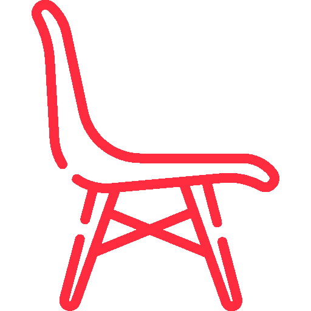
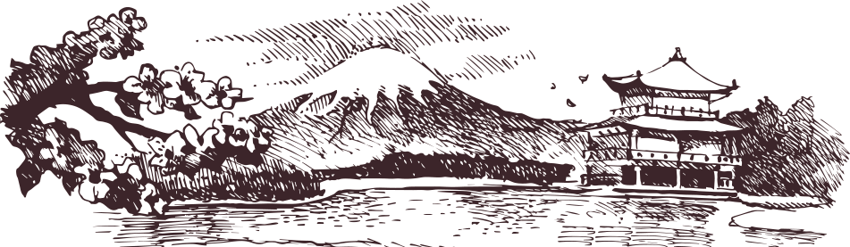

Pourquoi choisir nos
plats asiatiques?
La cuisine asiatique est le mélange des spécialités culinaires des pays de l’Asie comme la Chine, le Vietnam, le Japon et l’Inde. Les plats sont souvent préparés à base de riz blanc, de légumes et de fruits de mer.
Pour savourer les délicieux mets de la cuisine asiatique, n’hésitez pas à rejoindre notre restaurant !
Nous vous proposons des assiettes de sushi, de sashimi, de yakitori, de viande et de poisson. Vous pouvez manger dans la salle du restaurant ou emporter votre repas.
Plats asiatiques -
Beaune

Nous vous proposons des variétés de plats, de snacks et de desserts asiatiques. Outre la cuisine, la décoration et l’ambiance dans la salle témoignent également notre passion pour le Japon. Nous mettons à votre disposition une salle de restauration confortable et une terrasse spacieuse.
Nous proposons, par ailleurs, notre service traiteur pour vos événements. Vous pouvez nous confier la préparation du buffet de votre mariage, baptême, anniversaire ou banquet d’entreprise. Notre équipe intervient dans un rayon de 40 km autour de Beaune.

Réservez une table